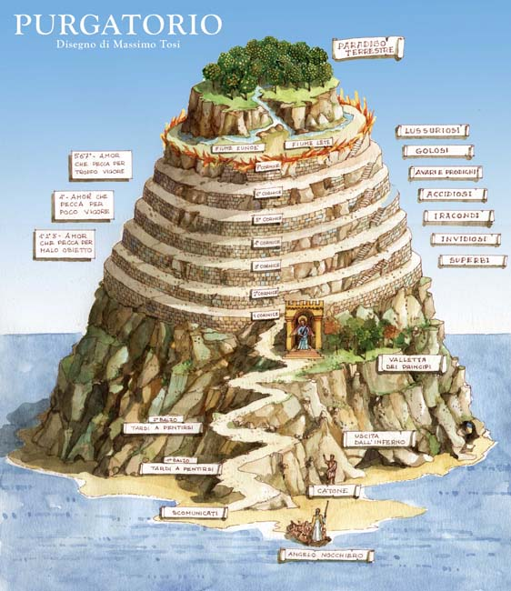

for String Quartet played by Two Performers
Composed by Eliot Burk
Neither of these performances are perfect; both contain mistakes, but they should give you a general idea of the concept and shape of the piece. As you can see,
there are significant differences between the two performances. This level of variability, or even a further departure from what I have done, is totally desirable for me.
This piece, like all my work, is a work-in-progress which will hopefully never be completed. To finish a work is to kill it.
Below there are additional details of how I made and think about this piece, should you want to replicate my particular results. However, I don't necessarily recommend that, as a clear-headed and direct exploration of your particular situation is likely to be more interesting than a rigid adherence to my score. I thought it could be useful for those who are having trouble realizing the piece to their own satisfaction though. Please email me at erburk@gmail.com if you have any questions, or if you'd like me to describe precisely what I am doing at any time point in the videos.
Violin 1:
I → E5+/-0.00 cents, 659.255 Hz
II → A4-37.637 cents, 430.538 Hz
III → C#4+24.726 cents, 281.17 Hz
IV → Gb3-12.911 cents, 183.623
Violin 2:
I → D#5+35.00 cents, 634.962 Hz
II → Ab4-2.637 cents, 414.673 Hz
III → Db4-40.274 cents, 270.809 Hz
IV → F3+22.089 cents, 176.856 Hz
Viola:
I → G4+32.363 cents, 399.392 Hz
II → C4-5.274 cents, 260.83 Hz
III → F3-42.911 cents, 170.339 Hz
IV → A2+19.452 cents, 111.243 Hz
Cello:
I → G3-32.637 cents, 192.337 Hz
II → B2+29.726 cents, 125.609 Hz
III → E2-7.911 cents, 82.031 Hz
IV → A1-45.548 cents, 53.572 Hz
You can listen to a demonstration of how this tuning sounds here:
This scordatura is constructed to be maximally dissonant, with the same interval between each string, and to not have any extremely lose or extremely tight strings.
I constructed it by first tuning Violin 1 in descending wolf fifths starting from I on E5.
Then tuning the Violin 2's I 65 cents flat from Violin I's I.
65 Cents is generally perceived as the most dissonant non-unison interval in multiple registers,
based on Paul Elrich's theory of Harmonic Entropy and the phenomenon of critical band dissonance.
The rest of Violin 2's strings are tuned in descending wolf fifths from I.
The Viola is tuned a wolf fifth plus 65 cents lower than Violin 2.
The Cello is tuned an octave and 65 cents lower than the Viola.
You can actually tune this scordatura by ear pretty easily.
Start by tuning Violin 1's I to E5.
Then lower the pitch of II so that it is the most dissonant sounding wide fifth below I that you can hear.
Tune III similarly, relative to II, and IV likewise. IV will end up a halfstep +12 cents lower than where it usually is.
Tune I on Violin 2 to the most dissonant small minor 2nd below Violin 1's I string you can hear,
then tune the rest of Violin 2's strings with the same process as Violin 1's.
Tune the I string on the Viola to the most dissonant small minor 2nd below Violin 2's II string you can hear,
then tune the rest of the Viola's string using the same process as Violin 1's.
Tune the Cello's I to the most dissonant small minor 9th you can hear below the Viola's I,
and then tune the rest of the Cello strings using the same process used for the other instruments.
Tuning by ear this way won't give you exactly the same frequency ratios notated above,
but it will be very dissonant – perhaps even more dissonant for your particular ears, instruments, and room.
Also considering the destructive techniques involved in this piece, the strings tuning will very quickly drift away from the initial tuning.
For these reasons I recommend tuning by ear rather than mechanically.
If you want to tune to the specific frequencies above though, you could use a tone generator.
I used this Online Tone Generator by Tomasz P. Szynalski.
The above two performances, from a different angle, solo:
| I thought the 11/2 version was more sucessful. | But you can take what you'd like from either version. |
|---|
| Either of the two players can draw gestures from any of these solo videos for their performance. | Remain open to other possibilities not included here. |
|---|
You can work out different possibilities of alignment by playing the above solo videos simultaneously, but starting the each video at a different time.
Generally speaking, the piece will work well regardless of the alignment between the two players, but I would avoid locking into exact rotational alignment with the
other performer for too long. If you have trouble staying independent, it generally works for players' rotations to be 180° off of each other.
It makes for a convincing ending for the players to end at the same time, though as you can see from the 11/1/2020 performance, it can still be effective to not end at exactly the same time.
This works better if performers trail off with a decresendo on the final gesture.
You can recall the procedures of imitative counterpoint by having the first player start alone, and then have the second player enter after a short time.
Take your concert's specific audience into account when considering issues of coordination or length – what would the audience most appreciate?
Just the worst dad joke gone too far. Don't read on unless you'd like the joke explained in way too much detail, sucking all potential humor out of it.
Tony Hawk's Pro Skater
was a videogame published in 1999 that I (and many other American kids of my generation, "Millenials") played quite a lot with my friends. The namesake,
Tony Hawk, was the first person to land the skateboard trick
The 900, a 2½-revolution (900°) aerial spin. This trick, in the established aesthetic context of
skateboarding, is an example of peak virtuosity. It displayed a greater level of technical skill in this realm than any similar trick before it.
I thought it a funny non-apt comparison to my composition, since both involve more rotations of an object than usually
done, expect with my piece the result clearly is far from virtuosic. Not only am I a pretty clumsy person, there is no established culture of people
competing to spin violins atop cellos as fast as they can, and thus no context in which it could be impressive as virtuosity. I would like to see that competition though.
A very important writing in the development of my thinking is the short essay
Is Ontology Fundamental?
by the 20th century french philosopher
Emmanuel Levinas.
This essay establishes one of the most important ideas in Levinas' thought: "ethics as first philosophy."
For Levinas, the Other is not knowable and cannot be made into an object of the self, as is done by traditional ontology.
Levinas instead reframes philosophy as the "wisdom of love" rather than the "love of wisdom" (the usual translation of "φιλοσοφία").
Because the Other is infinite and cannot be contained by any conception of them – to do so would be violence –
responsibility toward the Other precedes any "objective searching after truth".
I think for the last few years, with the domination of reality by social media, society has been facing a sort of ontological crisis. Each person, each microscopic subculture,
comes to their own understanding of the world via the narrowly curated media environment presented to them by feed-based recommendation algorithms. This has led to crises of
communication in our political and personal lives. The Other has never been more unknowable. Encounters with the Other are increasingly mediated by persuasive technology,
so Levinas' critical encounter, the "face-to-face," never happens, and we never get the experience of a "knowledge of love." Instead, constricted ontologies by default become our fundamental philosophy.
As we attempt to succeed in the marketplace, we each spin around in our own bubbles of preconception: our own personal virtuosities incomprehensible to anyone but ourselves.
Maybe not "we," but at least that is what this piece is for me: a private performance that I expect to impress no one but myself. I do hope you enjoy it though!